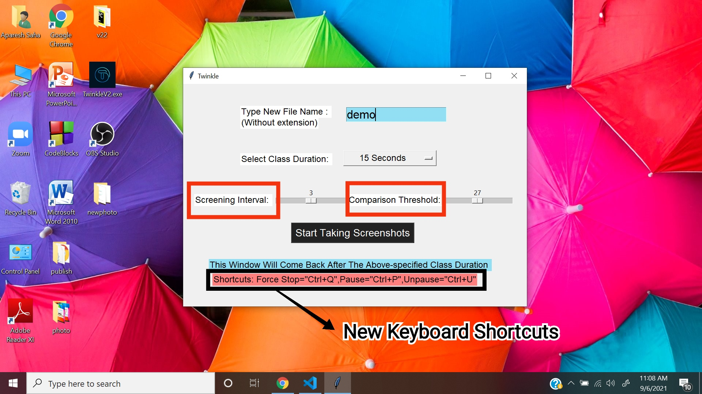
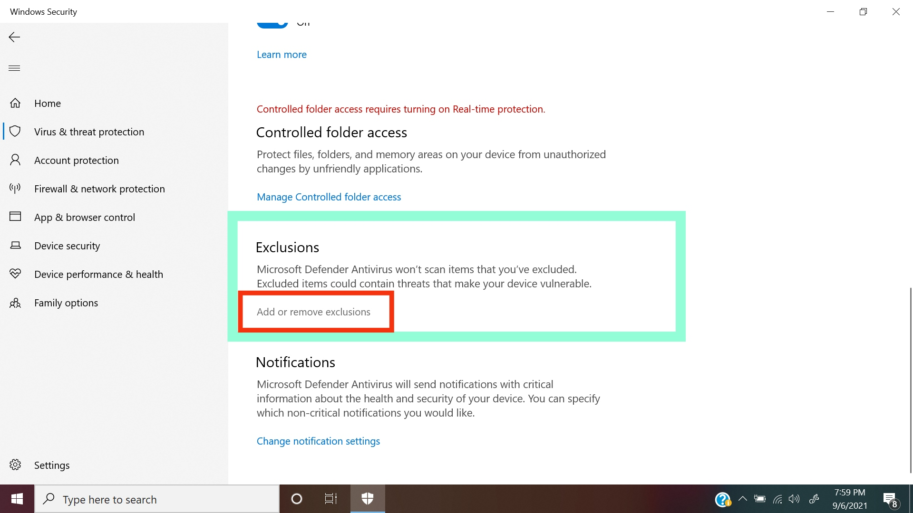

Twinkle
Desktop Application Name: Twinkle
Latest Release: Version 2.0.0
Developer and Designer: Anik Saha
Download Latest Release (Version - 2.0.0) From Github
How to Download, Install & Use
To avoid every possible persistent virus warnings, please follow these steps.
They are just the same as before except for requiring you to turn off the Virus and Threat Protection.
Pre-download Steps : On the windows Search Bar, type 'Virus and threat'. And then click 'Open'.
Under 'Virus and Threat Protection Settings', click 'Manage Settings'.
Now turn off the 'Real Time Protection' and then click "Yes".

Step - 1 : Click on the download link given above and it will take you to the Github Releases Page.
In the Release Page Click on 'TwinkleV2.exe' file and download will shortly start. Here is a demo
picture for version-1.0.0
Step - 2 : If Windows warns you while downloading the file, click on the upper arrow and click 'Keep'
as has been shown in the picture below.

Step - 3 : After the download completes, Go to Downloads folder, right click on 'Twinkle.exe' file
and copy this file. Now go to desktop and paste it in the desktop.
Step - 4 : Double click on 'Twinkle.exe' in the desktop and it may show a warning box like the image
below. Click on 'More Info'.

Step - 5 : Now click on 'Run Anyway'
Step - 6 : If everything is ok, a window like this will appear. Here you will type the file name
(without extension) for class note and the class duration. Then click on 'Start Taking Screenshots'.

Step - 7 : For testing now, type 'demo-file' as filename and select 2 minutes as class time.
Then click on 'Start Taking Screenshots'.

Step - 8 : Now simply open a browser window or open any application or refresh for 2 minutes.
Twinkle will consider this as your class time. After 2 minutes passes, a window with a success
message will appear as shown here.
Step - 9 : Now go to 'This PC' or 'My Computer' and open Local Disc(D:).

Step - 10 : Find the file named 'demo-note.pdf' and check if it is okay.

Now again go to 'Virus and Threat Protection' and click 'Manage Settings'. Ther scroll down to
find 'Exclusions', then click 'Add or Remove Exclusions'. Then click 'Add Exclusions' and then click
'File'. Then add 'TwinkleV2.exe' file in desktop and click 'Open'. After it is added, go back and Turn
on the Protection.

Copyright 2021, All rights reserved.
Developer and Designer : Anik Saha
Hello